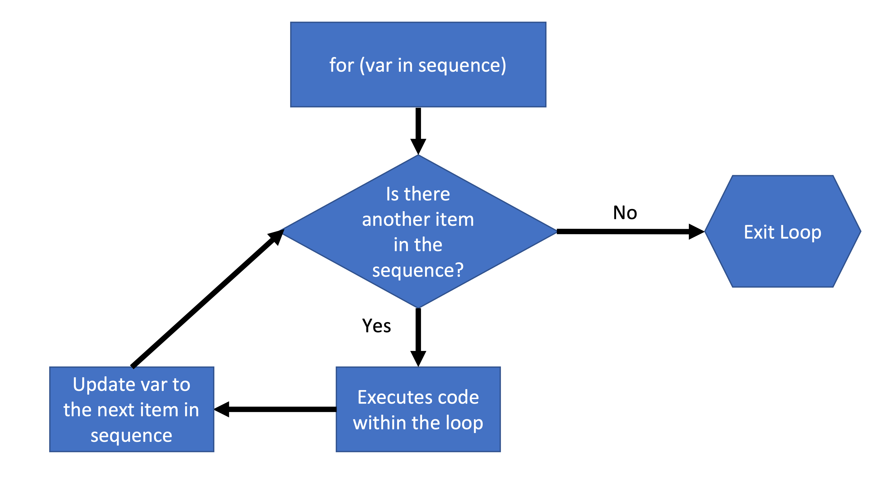

For Loops

This tutorial is designed to help understand/make for loops. This is essential for doing both repetitive and complex analyses in R and are useful for working in other programming language.
For loops are really great for repeating the same task over and over and over. Say if you want to run an analysis on a lot of different variables. One option would be to copy and paste the same code and manually change the variable. However, a better way that required less work on your part would be to use a for loop.
To follow this lesson you should understand conditional statements and logic in R and ggplot2. See my logic tutorial and ggplot2 tutorial .
General For loop structure
The general form a for loop is shown below:
 It’s called a for loop because we are looping through some sort of sequence and repeating a task during each iteration. At the end of the iteration, R checks if there is another item in the sequence we are iterating over. If there is another item we repeat a task keeping track of where we are in the sequence we are looping over. Otherwise we exit the loop.
In R we can loop through elements of a vector itself or through the different positions i.e., index of the vector.
For loop iterating through elements of a vector
A cartoon example might be just printing out the values in a vector.
i is the iterator variable, which keeps track of where we are in b. We use the iterator variable inside the body of the for loop (i.e, inside the curly brackets). In this case all we are printing out i each time, which will be a different element of b. The first time we go through the loop i will be equal to 1, the second time i will be equal to 50, the third time i will be equal to 2, and so on:
#first lets make a vector of numbers
b<-c(1,50,2,3,6,9,20)
#lets just print out each number
for(i in b){
print (i)
}## [1] 1
## [1] 50
## [1] 2
## [1] 3
## [1] 6
## [1] 9
## [1] 20We can do more complex things within the for loop. For example, we can include if…else statements. Let’s make a for loop that tests if the current element (i) is even or odd. To test if i is even we will use %% which gives us the modulo (equivalent to the remainder for positive integers). A i will be even if i modulo 2 is 0, otherwise it is odd.
We can use the paste() function to put together the value of different variables with characters. So now we are printing out the value of i and whether that element of the b vector is odd or even.
for(i in b) {
if (i %% 2 == 0) {
print(paste(i,"is even"))
} else{
print(paste(i,"is odd"))
}
}## [1] "1 is odd"
## [1] "50 is even"
## [1] "2 is even"
## [1] "3 is odd"
## [1] "6 is even"
## [1] "9 is odd"
## [1] "20 is even"For loop iterating through index
What if we want to save the results? In this case it might make more sense to iterate via index (or location of an element in the vector) rather than the actual element value. This way we can use that index to save the results in a separate vector that corresponds to the original vector.
The way do this is rather than for (i in b), we say for(i in 1:length(b)). Thus i will now be 1 the first time we loop through, 2 the second time we loop through, and so forth until we get the length of b which is the last location/position.
To do this we first need to make a results vector that is the same length of the input vector b to store our results which we name b_results.
Next, we modify the for() part as described above. Then we have to change what we are testing. We are no longer testing i since i is the position not an actual element of b. We can get the actual element of b that corresponds to the i’th position using b[i]. Finally to save the results in the right location we will assign values to the corresponding location in b_results like so: b_results[i]<-Result. Putting it all together:
b_results<-character(length=length(b))
print("initial b_results")## [1] "initial b_results"b_results## [1] "" "" "" "" "" "" ""for(i in 1:length(b)){
if(b[i]%%2==0){
b_results[i]<- "Even"
}else{
b_results[i]<- "Odd"
}
}
print("final b_results")## [1] "final b_results"b_results## [1] "Odd" "Even" "Even" "Odd" "Even" "Odd" "Even"Closing remarks
I hoped you enjoyed this tutorial. Please shoot me an email if there on any tips for improvement or if you caught a bug! Please check out the other tutorials on my website.
Matthew Kustra
Postdoctoral fellow
My research interests include sexual selection, speciation, and endosymbionts.